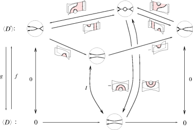
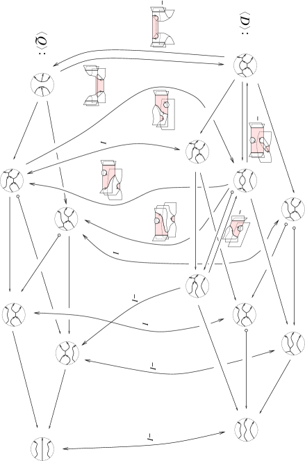

ثوابت الروابط المستعرضة من تشويهات تماثل Khovanov
الملخص
في هذا البحث نستعمل مقاربة Mackaay-Vaz للتماثل الشامل  لتعريف عائلة من الدورات، تُسمّى ثوابت ، وهي ثوابت للجدائل المستعرضة. تضم هذه العائلة ثابت Wu
لتعريف عائلة من الدورات، تُسمّى ثوابت ، وهي ثوابت للجدائل المستعرضة. تضم هذه العائلة ثابت Wu  . وعلاوة على ذلك، نحلّل انعدام أصناف التماثل لثوابت
. وعلاوة على ذلك، نحلّل انعدام أصناف التماثل لثوابت  ونربطه بانعدام ثابتي Plamenevskaya وWu. وأخيرًا نستعمل ثوابت
ونربطه بانعدام ثابتي Plamenevskaya وWu. وأخيرًا نستعمل ثوابت  لاشتقاق بعض المتراجحات من نمط Bennequin.
لاشتقاق بعض المتراجحات من نمط Bennequin.
1. مقدمة
خلفية ودوافع
لتكن نظام إحداثيات في  . إن بنية التماس المتماثلة على
. إن بنية التماس المتماثلة على  هي توزيع المستويات .
إن الرابط هو غمر أملس لعدد من نسخ في
هي توزيع المستويات .
إن الرابط هو غمر أملس لعدد من نسخ في  ، أما العقدة فهي رابط ذو مركبة واحدة. وتتيح بنية تمييز صنف خاص من الروابط (والعقد)، وهي تلك التي لا تكون مماسّة لـ
، أما العقدة فهي رابط ذو مركبة واحدة. وتتيح بنية تمييز صنف خاص من الروابط (والعقد)، وهي تلك التي لا تكون مماسّة لـ  في أي موضع (أي الروابط المستعرضة).
في أي موضع (أي الروابط المستعرضة).
يقال إن رابطين مستعرضين متكافئان (أو من النمط المستعرض نفسه) إذا كانا متساويين بالتشاكل المحيطي عبر عائلة ذات معلمة واحدة من الروابط المستعرضة. وبوجه خاص، تمثّل الروابط المستعرضة المتكافئة نوع الرابط نفسه (أي صنف التشاكل المحيطي لرابط).
أدّت دراسة الروابط المستعرضة، ولا تزال تؤدي، دورًا مركزيًا في دراسة الطوبولوجيا منخفضة الأبعاد. وهدف هذا البحث هو عرض ثوابت جديدة للروابط المستعرضة تنشأ من تشويهات تماثل Khovanov  .
يرث كل رابط مستعرض توجيهًا طبيعيًا من
.
يرث كل رابط مستعرض توجيهًا طبيعيًا من  (انظر [4]). وكل الثوابت المستعرضة المعرّفة في هذا البحث تُعرّف بالنسبة إلى هذا التوجيه.
(انظر [4]). وكل الثوابت المستعرضة المعرّفة في هذا البحث تُعرّف بالنسبة إلى هذا التوجيه.
لتعريف ثوابتنا نحتاج إلى تمثيل خاص للروابط المستعرضة. فمن نتيجة تعود إلى D. Bennequin ([2]) أن كل رابط مستعرض مكافئ لجديلة مغلقة. وتوفر نتيجة أخرى، تعود إلى S. Orevkov وV. Shevchishin ([19]) وبصورة مستقلة إلى N. Wrinkle ([23])، مجموعة كاملة من الحركات التوافقية التي تربط كل الجدائل التي تمثل إغلاقاتها النمط المستعرض نفسه. ونلخص هذه النتائج في المبرهنة الآتية، التي سنشير إليها في بقية البحث باسم مبرهنة ماركوف المستعرضة.
مبرهنة 1 (Bennequin [2]، Orevkov وShevchishin [19]، Wrinkle [23]).
كل رابط مستعرض متساوٍ مستعرضيًا مع إغلاق جديلة (محورها هو المحور  ).
وعلاوة على ذلك، تمثل جديلتان النمط المستعرض نفسه إذا وفقط إذا أمكن الربط بينهما بسلسلة منتهية من علاقات الجدائل، والمرافقَات، والتثبيتات الموجبة، وإزالة التثبيتات الموجبة11
1
لتكن ، إن الموجب (على الترتيب السالب) لتثبيت
).
وعلاوة على ذلك، تمثل جديلتان النمط المستعرض نفسه إذا وفقط إذا أمكن الربط بينهما بسلسلة منتهية من علاقات الجدائل، والمرافقَات، والتثبيتات الموجبة، وإزالة التثبيتات الموجبة11
1
لتكن ، إن الموجب (على الترتيب السالب) لتثبيت  هو الجديلة (على الترتيب ). أما إزالة التثبيت فهي العملية العكسية: فإذا اعتبرنا جديلة على الصورة (على الترتيب )، حيث ، فإن إزالة تثبيتها الموجبة (على الترتيب السالبة) هي الجديلة .. وتسمى هذه الحركات حركات ماركوف المستعرضة.
هو الجديلة (على الترتيب ). أما إزالة التثبيت فهي العملية العكسية: فإذا اعتبرنا جديلة على الصورة (على الترتيب )، حيث ، فإن إزالة تثبيتها الموجبة (على الترتيب السالبة) هي الجديلة .. وتسمى هذه الحركات حركات ماركوف المستعرضة.
ملاحظة 1.
للجدائل توجيه طبيعي، ويتطابق توجيهها مع توجيه الرابط المستعرض الموافق لها.
ملاحظة 2.
بإضافة التثبيت السالب وإزالة التثبيت السالب إلى مجموعة حركات ماركوف المستعرضة نستعيد المجموعة الكاملة من حركات ماركوف.
تترجم أي سلسلة من حركات ماركوف بين جدائل، بصورة طبيعية، إلى سلسلة من حركات Reidemeister الموجهة بين إغلاقاتها. وبوجه خاص، يمكن النظر إلى المرافقة في زمرة الجدائل كسلسلة من حركات Reidemeister من النوع الثاني تتبعها مساواة مستوية، في حين يمكن النظر إلى علاقات الجدائل كحركات Reidemeister من النوع الثاني أو الثالث. ونلاحظ أنه ليست كل النسخ الموجهة من حركات Reidemeister الثانية والثالثة تنشأ بهذه الطريقة؛ فالتي يمكن الحصول عليها بتركيب حركات ماركوف وعلاقات الجدائل تسمى شبيهة بالجدائل أو متماسكة. وأخيرًا، يترجم التثبيت الموجب (على الترتيب السالب) إلى حركة Reidemeister أولى موجبة (على الترتيب سالبة)، كما هو مبين في الشكل 1.
للروابط المستعرضة ثابتان كلاسيكيان: نوع الرابط وعدد الارتباط الذاتي22
2
من الناحية التقنية، يمكن في الروابط تسجيل عدد الارتباط الذاتي لكل مركبة، وهذا يعرّف ثابتًا مستعرضًا أقوى قليلًا يسمى مصفوفة الارتباط الذاتي. غير أننا، اتساقًا مع الأدبيات في هذا الموضوع (انظر [3, 14, 20, 24])، سنقتصر في هذا البحث على عدد الارتباط الذاتي. . ويعرّف الأخير كما يأتي. لتكن  جديلة، ولنضع
جديلة، ولنضع
حيث يدل على الفتل، ويدل على دليل الجديلة (أي عدد الخيوط).
في ضوء مبرهنة ماركوف المستعرضة، يتضح مباشرة أن عدد الارتباط الذاتي ثابت مستعرض. وعلاوة على ذلك، يتبع بسهولة من تعريف  أن التثبيت السالب (على الترتيب إزالة التثبيت) لا يحافظ على صنف تكافؤ الرابط المستعرض. وكل ثابت قادر على تمييز روابط مستعرضة مختلفة لها الثوابت الكلاسيكية نفسها يسمى فعالًا. ومن المسائل الأساسية في دراسة الروابط المستعرضة إيجاد ثوابت فعالة.
أن التثبيت السالب (على الترتيب إزالة التثبيت) لا يحافظ على صنف تكافؤ الرابط المستعرض. وكل ثابت قادر على تمييز روابط مستعرضة مختلفة لها الثوابت الكلاسيكية نفسها يسمى فعالًا. ومن المسائل الأساسية في دراسة الروابط المستعرضة إيجاد ثوابت فعالة.
باستعمال تمثيل الروابط المستعرضة كجدائل مغلقة، عرّفت O. Plamenevskaya ثابتًا مستعرضًا  . وهذا الثابت صنف تماثل في تصنيف Khovanov لكثير حدود Jones (انظر [20]). ومنذ عمل Plamenevskaya الرائد، عُرّفت ثوابت أخرى للروابط المستعرضة آتية من تماثلات الروابط الكمومية (وكذلك من تماثلات ذات طبيعة Floerية). في 2008، عمّم H. Wu (انظر [24]) الثابت
. وهذا الثابت صنف تماثل في تصنيف Khovanov لكثير حدود Jones (انظر [20]). ومنذ عمل Plamenevskaya الرائد، عُرّفت ثوابت أخرى للروابط المستعرضة آتية من تماثلات الروابط الكمومية (وكذلك من تماثلات ذات طبيعة Floerية). في 2008، عمّم H. Wu (انظر [24]) الثابت  إلى عائلة من الثوابت التي هي أصناف تماثل في تصنيف M. Khovanov وL. Rozansky لثوابت Reshetikhin-Turaev من النمط .
تقبل تماثلات Khovanov-Rozansky (وكذلك تماثل Khovanov، بوصفه حالة ) تشويهات؛ وهذه «النظريات المشوهة» تُوسم بكثير حدود أحادي من الدرجة
إلى عائلة من الثوابت التي هي أصناف تماثل في تصنيف M. Khovanov وL. Rozansky لثوابت Reshetikhin-Turaev من النمط .
تقبل تماثلات Khovanov-Rozansky (وكذلك تماثل Khovanov، بوصفه حالة ) تشويهات؛ وهذه «النظريات المشوهة» تُوسم بكثير حدود أحادي من الدرجة  يسمى الكمون.
في 2015، وسّع R. Lipshitz وL. Ng وS. Sarkar (انظر [14]) تعريف ثابت Plamenevskaya إلى سلسلتين تنتميان إلى معقد السلاسل في نسخة ملتوية من تشويه Lee (أي النظرية الموافقة للكمون ). وقد وسّع المؤلف في [3] ثابت Plamenevskaya إلى جميع تشويهات تماثل Khovanov. ولا يزال من غير المعلوم، وقت كتابة هذا البحث، هل هذه الثوابت كلها فعالة أم لا.
يسمى الكمون.
في 2015، وسّع R. Lipshitz وL. Ng وS. Sarkar (انظر [14]) تعريف ثابت Plamenevskaya إلى سلسلتين تنتميان إلى معقد السلاسل في نسخة ملتوية من تشويه Lee (أي النظرية الموافقة للكمون ). وقد وسّع المؤلف في [3] ثابت Plamenevskaya إلى جميع تشويهات تماثل Khovanov. ولا يزال من غير المعلوم، وقت كتابة هذا البحث، هل هذه الثوابت كلها فعالة أم لا.
مخطط البحث وصياغة النتائج
هدف هذا البحث هو توسيع تعريف ثابت Wu  إلى جميع تشويهات تماثل Khovanov33
3
عُرّف تماثل
إلى جميع تشويهات تماثل Khovanov33
3
عُرّف تماثل  أولًا من قبل Khovanov، ثم وسّع Khovanov وRozansky التعريف إلى كل
أولًا من قبل Khovanov، ثم وسّع Khovanov وRozansky التعريف إلى كل  ، من أجل ، بتقنية مختلفة.
، من أجل ، بتقنية مختلفة.  . وكما ذكرنا أعلاه، تُوسم هذه التشويهات بكثير حدود أحادي من الدرجة
. وكما ذكرنا أعلاه، تُوسم هذه التشويهات بكثير حدود أحادي من الدرجة  (أي الكمون)، حيث تكون R حلقة معاملات نظرية التماثل.
وعلاوة على ذلك، فإن نظرية التماثل الناتجة إما متدرجة أو مرشحة بحسب
(أي الكمون)، حيث تكون R حلقة معاملات نظرية التماثل.
وعلاوة على ذلك، فإن نظرية التماثل الناتجة إما متدرجة أو مرشحة بحسب  . ونستعمل بناء التماثل الشامل
. ونستعمل بناء التماثل الشامل  العائد إلى M. Mackaay وP. Vaz ([17])، والذي يشفّر كل تشويهات تماثل Khovanov
العائد إلى M. Mackaay وP. Vaz ([17])، والذي يشفّر كل تشويهات تماثل Khovanov  ([18]). وقد سعينا إلى إبقاء البحث مكتفيًا بذاته قدر الإمكان، ولذلك سنراجع بناء Mackaay وVaz في القسمين 2 و3.
([18]). وقد سعينا إلى إبقاء البحث مكتفيًا بذاته قدر الإمكان، ولذلك سنراجع بناء Mackaay وVaz في القسمين 2 و3.
في القسم 4 نعرّف، لكل مخطط  وكمون
وكمون  ولكل جذر
ولكل جذر  لـ
لـ  في
في  ، سلسلة يتبين أنها دورة (القضية 11).
إذا كانت هي إغلاق جديلة
، سلسلة يتبين أنها دورة (القضية 11).
إذا كانت هي إغلاق جديلة  ، فسنرمز إلى ببساطة بـ .
مبرهنتنا الرئيسة هي الآتية.
، فسنرمز إلى ببساطة بـ .
مبرهنتنا الرئيسة هي الآتية.
مبرهنة 2.
لتكن  جديلة.
لكل جذر
جديلة.
لكل جذر  لـ ، تكون الدورة ثابتًا مستعرضًا، حيث يشير الخط العلوي إلى الجديلة المرآتية. وبصورة أدق، إذا كانت
لـ ، تكون الدورة ثابتًا مستعرضًا، حيث يشير الخط العلوي إلى الجديلة المرآتية. وبصورة أدق، إذا كانت  و مرتبطتين بسلسلة من حركات ماركوف المستعرضة، وإذا رمزنا بـ
و مرتبطتين بسلسلة من حركات ماركوف المستعرضة، وإذا رمزنا بـ  إلى التطبيق الموافق للسلسلة المرآتية لهذه الحركات، فعندئذٍ
إلى التطبيق الموافق للسلسلة المرآتية لهذه الحركات، فعندئذٍ
وعلاوة على ذلك، إذا كانت نظرية التماثل مرشحة (على الترتيب متدرجة)، فإن الدرجة المرشحة44 4 أي الفهرس الموافق لأصغر معقد جزئي في الترشيح يحتوي السلسلة . (على الترتيب الدرجة) لـ هي .
ملاحظة 3.
الدرجة المرشحة المذكورة في المبرهنة 2 هي الدرجة المرشحة لـ السلسلة ، وليست الدرجة المرشحة لصنف تماثلها. وليست الدرجة المرشحة لـ بالضرورة ثابتًا مستعرضًا ذا معنى. فمثلًا، إذا كانت  حقلًا وكان لـ ثلاثة جذور متميزة، فإن الدرجة المرشحة لـ تكون ثابت توافق (واحدًا من ثوابت المذكورة في القضية 4). وتعطي المقارنة بين الدرجتين المرشحتين، تحت الفرضيات أعلاه، نسخة أضعف من أول متراجحة من نمط Bennequin في القضية 4.
حقلًا وكان لـ ثلاثة جذور متميزة، فإن الدرجة المرشحة لـ تكون ثابت توافق (واحدًا من ثوابت المذكورة في القضية 4). وتعطي المقارنة بين الدرجتين المرشحتين، تحت الفرضيات أعلاه، نسخة أضعف من أول متراجحة من نمط Bennequin في القضية 4.
استلهامًا من المبرهنة أعلاه، تسمى الدورات مجتمعة ثوابت  .
ونود أن نشير إلى أن بناء ثوابت
.
ونود أن نشير إلى أن بناء ثوابت  يبدو قابلًا للتعميم إلى حالة
يبدو قابلًا للتعميم إلى حالة  (وكذلك مع الألوان). وسيكون ذلك موضوع بحث لاحق للمؤلف بالاشتراك مع P. Wedrich.
(وكذلك مع الألوان). وسيكون ذلك موضوع بحث لاحق للمؤلف بالاشتراك مع P. Wedrich.
إن استكشاف فعالية هذه الثوابت مسألة عسيرة. أولًا، لأن تمييز العقد المستعرضة غير المتكافئة ذات الثوابت الكلاسيكية نفسها مسألة دقيقة. وهذا تؤكده أيضًا حقيقة أن العائلات المعروفة من العقد المستعرضة التي لا تميزها ثوابتها الكلاسيكية قليلة فقط. وثانيًا، بسبب طبيعة ثوابتنا: فهي سلاسل في معقد سلاسل يعتمد على المخطط، وذلك حتى فعل زمرة معينة من هوموتوبيات السلاسل. لذلك نترك السؤال الآتي مفتوحًا.
سؤال 1.
هل ثوابت  فعالة؟
فعالة؟
في القسم 5 نستعمل أصناف التماثل لثوابت  لتعريف ثابتين مساعدين أسهل تحليلًا. وهذان الثابتان هما: انعدام صنف التماثل، وقابلية قسمة صنف التماثل بالنسبة إلى عنصر غير قابل للعكس.
لتعريف ثابتين مساعدين أسهل تحليلًا. وهذان الثابتان هما: انعدام صنف التماثل، وقابلية قسمة صنف التماثل بالنسبة إلى عنصر غير قابل للعكس.
في الحالة التي تكون فيها الحلقة الأساسية حقلًا، نستطيع ربط انعدام صنف التماثل لثوابت  بانعدام ثابت Plamenevskaya وثابت Wu . ونتيجتنا الرئيسة الثانية هي الآتية.
بانعدام ثابت Plamenevskaya وثابت Wu . ونتيجتنا الرئيسة الثانية هي الآتية.
قضية 3.
ليكن  كمونًا فوق حقل ، ولتكن
كمونًا فوق حقل ، ولتكن  و و
و و جذور
جذور  . ولنرمز بـ
. ولنرمز بـ  إلى التماثل الموافق للكمون
إلى التماثل الموافق للكمون  . عندئذ، إذا أُعطيت جديلة
. عندئذ، إذا أُعطيت جديلة  فلنا ما يأتي:
فلنا ما يأتي:
-
(1)
إذا كان
 جذرًا بسيطًا لـ
جذرًا بسيطًا لـ  ، فإن
، فإن ![$[\beta_{\omega, x_1}(\overline{B})]$](equations/eq_0096.svg) غير تافه في ؛
غير تافه في ؛ -
(2)
إذا كان
 جذرًا مزدوجًا لـ
جذرًا مزدوجًا لـ  ، فإن
، فإن ![$[\beta_{\omega, x_1}(\overline{B})]$](equations/eq_0100.svg) ينعدم إذا وفقط إذا انعدم ثابت Plamenevskaya في ؛
ينعدم إذا وفقط إذا انعدم ثابت Plamenevskaya في ؛ -
(3)
إذا كان
 جذرًا ثلاثيًا لـ ، فإن
جذرًا ثلاثيًا لـ ، فإن ![$[\beta_{\omega, x_1}(\overline{B})]$](equations/eq_0105.svg) ينعدم إذا وفقط إذا انعدم ثابت Wu في ؛
ينعدم إذا وفقط إذا انعدم ثابت Wu في ؛
وبوجه خاص، فإن انعدام لا يعتمد على الكمون  ولا على الجذر
ولا على الجذر  ، بل يعتمد فقط على تعددية
، بل يعتمد فقط على تعددية  بوصفه جذرًا لـ
بوصفه جذرًا لـ  . (ومع ذلك فقد يعتمد على اختيار الحقل الأساسي.)
. (ومع ذلك فقد يعتمد على اختيار الحقل الأساسي.)
تصدق القضية السابقة فقط إذا كانت الحلقة الأساسية حقلًا. وهذا يقود طبيعيًا إلى السؤال الآتي.
سؤال 2.
لنفترض أن الحلقة الأساسية  مجال نويثري. هل صحيح أن انعدام
مجال نويثري. هل صحيح أن انعدام ![$[\beta_{\omega, x_1}(\overline{B})]$](equations/eq_0114.svg) يعتمد فقط على تعددية
يعتمد فقط على تعددية  وعلى انعدام ثوابتي
وعلى انعدام ثوابتي  و
و ؟
؟
تتيح لنا القضية السابقة ربط فعالية انعدام أصناف التماثل لثوابت  بفعالية انعدام ثوابتي
بفعالية انعدام ثوابتي  و
و . وبوجه خاص، إذا أخذنا في الحسبان النتائج في [3, 14]، نحصل على عدم فعالية انعدام أصناف التماثل لثوابت
. وبوجه خاص، إذا أخذنا في الحسبان النتائج في [3, 14]، نحصل على عدم فعالية انعدام أصناف التماثل لثوابت  الموافقة للجذور المزدوجة في الحالات الآتية: العقد ذات عدد التقاطعات ، وحركات flype، وعقد الجسرين. وتقع معظم أمثلة العقد المستعرضة المختلفة ذات الثوابت الكلاسيكية نفسها ضمن هذه الفئات. ومع ذلك يبقى السؤال الآتي مفتوحًا.
الموافقة للجذور المزدوجة في الحالات الآتية: العقد ذات عدد التقاطعات ، وحركات flype، وعقد الجسرين. وتقع معظم أمثلة العقد المستعرضة المختلفة ذات الثوابت الكلاسيكية نفسها ضمن هذه الفئات. ومع ذلك يبقى السؤال الآتي مفتوحًا.
سؤال 3.
هل انعدام أصناف التماثل لثوابت  ثابت فعال؟
ثابت فعال؟
ليكن  مجالًا تكامليًا، ولتكن عنصرًا غير قابل للعكس. إذا أُعطي كمون
مجالًا تكامليًا، ولتكن عنصرًا غير قابل للعكس. إذا أُعطي كمون ![$\omega\in R[x]$](equations/eq_0126.svg) وأحد جذوره ، فإن العدد
وأحد جذوره ، فإن العدد
ثابت مستعرض معرّف تعريفًا جيدًا، حيث إن إذا وفقط إذا كان ![$[\beta_{\omega, x_1}(\overline{B})]$](equations/eq_0130.svg) تافهًا أو ذا التواء بالنسبة إلى
تافهًا أو ذا التواء بالنسبة إلى  . ونحلل هذه الثوابت في الحالة و، مع كون و
. ونحلل هذه الثوابت في الحالة و، مع كون و و متميزة، و. ومن تحليلنا نحصل على المتراجحات الآتية من نمط Bennequin.
و متميزة، و. ومن تحليلنا نحصل على المتراجحات الآتية من نمط Bennequin.
شكر وتقدير
يود المؤلف أن يشكر الأستاذ Paolo Lisca على نصائحه والحوارات المفيدة ودعمه المتواصل. كما يود المؤلف أن يشكر M. Mackaay وP. Vaz لسماحهما له باستعمال الصور في الشكلين 14 و19. وأخيرًا يود المؤلف أن يشكر المحكّمين على تعليقاتهم واقتراحاتهم القيّمة. هذا البحث مقتبس جزئيًا من أطروحة الدكتوراه للمؤلف. وخلال دراسته للدكتوراه كان المؤلف مدعومًا بمنحة دكتوراه «Firenze-Perugia-Indam».
2. الشبكات والرغوات
في هذا القسم نستعرض بإيجاز تعريف الشبكات والرغوات.
تؤدي هذه الكائنات الدور نفسه الذي تؤديه المتشعبات والأسطح المغلقة  -الأبعاد في الوصف الهندسي لـ Bar-Natan لتماثل Khovanov (وتشويهاته).
-الأبعاد في الوصف الهندسي لـ Bar-Natan لتماثل Khovanov (وتشويهاته).
2.1. الشبكات
أدخل Greg Kuperberg الشبكات أصلًا في [9]، أداةً لدراسة نظرية تمثيل جبر Lie من الرتبة  ، واستعملها Khovanov في [7] لتعريف تصنيف لكثير حدود Jones-
، واستعملها Khovanov في [7] لتعريف تصنيف لكثير حدود Jones- .
.
تعريف 1.
إن الشبكة رسم بياني مستوٍ موجه ثلاثي التكافؤ مغمور في ، وقد تكون له مركبات بلا رؤوس (حلقات)، ويحقق الخواص الآتية:
-
(a)
لـ
 عدد منتهٍ من الرؤوس وعدد منتهٍ من الحلقات؛
عدد منتهٍ من الرؤوس وعدد منتهٍ من الحلقات؛ -
(b)
يوجد نوعان من الحواف في
 ، هما الحواف الرفيعة والحواف السميكة، ولكل رأس توجد حافة سميكة وحيدة حادثة في
، هما الحواف الرفيعة والحواف السميكة، ولكل رأس توجد حافة سميكة وحيدة حادثة في  ؛
؛ -
(c)
كل رأس من
 إما منبع55
5
الرأس
إما منبع55
5
الرأس  في رسم بياني موجه يسمى منبعًا إذا كانت كل الحواف الحادثة في
في رسم بياني موجه يسمى منبعًا إذا كانت كل الحواف الحادثة في  موجهة إلى الخارج من
موجهة إلى الخارج من  . أو مصب66
6
الرأس
. أو مصب66
6
الرأس  في رسم بياني موجه يسمى مصبًا إذا كانت كل الحواف الحادثة في
في رسم بياني موجه يسمى مصبًا إذا كانت كل الحواف الحادثة في  موجهة نحو
موجهة نحو  ..
..
لأسباب تقنية يُعدّ أيضًا المجموع الخالي شبكة (أي الشبكة الخالية). وسيُسمّى الرسم البياني (المجرد) الموجه ثلاثي التكافؤ  الذي يحقق (a) و(b) شبكة مجردة.
الذي يحقق (a) و(b) شبكة مجردة.
إن التمييز بين الحواف السميكة والرفيعة ضروري لتتبع التقاطعات بعد حلّها (انظر القسم الفرعي 3.2). وعند الحاجة تُرسم الحواف السميكة أثخن وتلوّن بالبنفسجي، وإلا فلا يُجرى أي تمييز.
2.2. الرغوات
على وجه التقريب، الرغوات أسطح متشعبة مزخرفة تكون مفردة على طول متشعب أملس  -البعد من نقاط ثلاثية. ولنضع الزخارف جانبًا ونبدأ بتعريف البنية الطوبولوجية الكامنة للرغوة.
-البعد من نقاط ثلاثية. ولنضع الزخارف جانبًا ونبدأ بتعريف البنية الطوبولوجية الكامنة للرغوة.
إن ما قبل الرغوة الطوبولوجي ما قبل الرغوة  فضاء طوبولوجي متراص بحيث يكون لكل نقطة جوار متشاكل مع أحد النماذج المحلية الأربعة في الشكل 2.
تسمى النقطة منتظمة إذا كان لها جوار متشاكل مع (C) أو (D). وتسمى النقاط غير المنتظمة مفردة، ويرمز إلى مجموعة النقاط المفردة بـ
فضاء طوبولوجي متراص بحيث يكون لكل نقطة جوار متشاكل مع أحد النماذج المحلية الأربعة في الشكل 2.
تسمى النقطة منتظمة إذا كان لها جوار متشاكل مع (C) أو (D). وتسمى النقاط غير المنتظمة مفردة، ويرمز إلى مجموعة النقاط المفردة بـ  .
تسمى المركبات المتصلة لـ المناطق المنتظمة لـ
.
تسمى المركبات المتصلة لـ المناطق المنتظمة لـ  .
وأخيرًا، تسمى النقطة الحدية لـ
.
وأخيرًا، تسمى النقطة الحدية لـ  نقطة لا تمتلك جوارًا متشاكلًا مع (A) أو (C). ويُسمّى ما قبل الرغوة الطوبولوجي
ذا الحد الخالي مغلقًا.
نقطة لا تمتلك جوارًا متشاكلًا مع (A) أو (C). ويُسمّى ما قبل الرغوة الطوبولوجي
ذا الحد الخالي مغلقًا.
ملاحظة 4.
الموضع المفرد لما قبل الرغوة هو اتحاد منفصل من دوائر وأقواس، تسمى دوائر مفردة وأقواسًا مفردة. وتقابل نقاط الحد المفردة نقاط حد الأقواس المفردة.
إن اختيار أطلس77
7
نعني غطاءً مفتوحًا لـ  مع تشاكل منزلي لكل عنصر من عناصر الغطاء مع أحد النماذج المحلية في الشكل 2. على ما قبل الرغوة يحدد أطلسًا على كل منطقة منتظمة وكذلك على .
إن ما قبل الرغوة الأملس هو ما قبل رغوة طوبولوجي مزود بأطلس طوبولوجي مختار بحيث تكون الأطالس المستحثة على المناطق المنتظمة وعلى الموضع المفرد أطالس ملساء.
وبالمثل، إذا أُعطي ما قبل رغوة
مع تشاكل منزلي لكل عنصر من عناصر الغطاء مع أحد النماذج المحلية في الشكل 2. على ما قبل الرغوة يحدد أطلسًا على كل منطقة منتظمة وكذلك على .
إن ما قبل الرغوة الأملس هو ما قبل رغوة طوبولوجي مزود بأطلس طوبولوجي مختار بحيث تكون الأطالس المستحثة على المناطق المنتظمة وعلى الموضع المفرد أطالس ملساء.
وبالمثل، إذا أُعطي ما قبل رغوة  ، فإن التوجيه على
، فإن التوجيه على  هو اختيار توجيه لإغلاق كل منطقة منتظمة بحيث تتفق التوجيهات المستحثة في تقاطع منطقتين مغلقتين.
هو اختيار توجيه لإغلاق كل منطقة منتظمة بحيث تتفق التوجيهات المستحثة في تقاطع منطقتين مغلقتين.
ملاحظة 5.
إذا اخترنا توجيهًا لما قبل رغوة قابل للتوجيه، فإن ذلك يستحث توجيهًا على الموضع المفرد.
ملاحظة 6.
حد ما قبل الرغوة الطوبولوجي رسم بياني ثلاثي التكافؤ منتهٍ (قد يكون خاليًا)، تقابل رؤوسه نقاط الحد المفردة. وإذا كان ما قبل الرغوة موجهًا فإن حده رسم بياني موجه. وعلاوة على ذلك، فإن كل رأس من الرسم البياني الحدي لما قبل رغوة موجه هو إما مصب أو منبع. وبعبارة أخرى، فإن حد ما قبل رغوة موجه هو شبكة مجردة.
تعريف 2.
إن ما قبل الرغوة المزخرف هو ما قبل رغوة موجه  مزود بالمعطيات الآتية:
مزود بالمعطيات الآتية:
-
(a)
عدد منتهٍ (قد يكون صفرًا) من النقاط الموسومة، تسمى نقطًا، في داخل كل منطقة منتظمة من
 ؛
؛ -
(b)
ترتيب دوري على المناطق المنتظمة الحادثة في قوس مفرد أو دائرة مفردة.
يمكن تعريف مقولة تكون كائناتها الشبكات المجردة ومورفيزماتها تركيبات خطية صورية على  للثلاثيات التي تحقق الخواص الآتية
للثلاثيات التي تحقق الخواص الآتية
-
 ما قبل رغوة مزخرف؛
ما قبل رغوة مزخرف؛ -
، حيث إن هو كائن المصدر و هو كائن الهدف للمورفيزم؛
-
، حيث تشير إشارة السالب إلى عكس التوجيه؛
-
تُنظر الثلاثية حتى التشاكلات المحيطية المثبتة للحد، التي لا تغير المناطق المنتظمة للنقط وتحافظ على ترتيب المركبات قرب كل قوس مفرد.
وأخيرًا، يعرّف تركيب ثلاثيتين  و بأنه الثلاثية ، حيث تُحصل بلصق
و بأنه الثلاثية ، حيث تُحصل بلصق  و على طول
و على طول  .
.
تعريف 3.
إن الرغوة هي ما قبل رغوة مزخرف مغمور غمرًا سليمًا وأملسًا88
8
أي بطريقة يكون فيها قيد الغمر على كل منطقة منتظمة وعلى الموضع المفرد أملسًا. في  . وعلاوة على ذلك، نطلب أن يتطابق الترتيب الدوري للمناطق المنتظمة عند كل قوس مفرد أو دائرة مفردة مع الترتيب الدوري المستحث بالدوران مع عقارب الساعة99
9
نفترض تثبيت توجيه لـ
. وعلاوة على ذلك، نطلب أن يتطابق الترتيب الدوري للمناطق المنتظمة عند كل قوس مفرد أو دائرة مفردة مع الترتيب الدوري المستحث بالدوران مع عقارب الساعة99
9
نفترض تثبيت توجيه لـ  . حول قوس مفرد أو دائرة مفردة. وستُعتبر الرغوات حتى التشاكلات المحيطية لـ التي تثبت حد الرغوة ولا تغير المناطق المنتظمة للنقط.
. حول قوس مفرد أو دائرة مفردة. وستُعتبر الرغوات حتى التشاكلات المحيطية لـ التي تثبت حد الرغوة ولا تغير المناطق المنتظمة للنقط.
إذا أُعطيت شبكتان  و
و ، فإن رغوة بين
، فإن رغوة بين  و
و هي رغوة
هي رغوة  بحيث
بحيث
المقولة هي المقولة التي كائناتها الشبكات، ومورفيزماتها تراكيب خطية على  من الرغوات بين شبكتين، وتركيبها معرّف بلصق رغوتين على طول الحد المشترك. ولأسباب تقنية تُدرج الرغوة الخالية أيضًا في
من الرغوات بين شبكتين، وتركيبها معرّف بلصق رغوتين على طول الحد المشترك. ولأسباب تقنية تُدرج الرغوة الخالية أيضًا في  بوصفها عنصرًا من .
بوصفها عنصرًا من .
2.3. العلاقات المحلية
العلاقات المحلية هي مساويات بين رغوات (أو تراكيب خطية من رغوات) متماثلة إلا داخل كرة صغيرة. ويمكن تقسيم العلاقات التي تعنينا إلى نوعين:
تعتمد علاقات الاختزال على اختيار كثير حدود ![$\omega(x)\in R [x]$](equations/eq_0205.svg) (أي الكمون) من الشكل
(أي الكمون) من الشكل
لذلك سنفترض من الآن فصاعدًا أن  مثبت. وفي الحالة التي تكون فيها
مثبت. وفي الحالة التي تكون فيها  حلقة متدرجة، يمكن أن نطلب أن تكون المعاملات
حلقة متدرجة، يمكن أن نطلب أن تكون المعاملات  و
و و
و ، وكذلك كثير الحدود
، وكذلك كثير الحدود  ، متجانسة من أجل الحصول على نظرية متدرجة. ولنعد الآن إلى العلاقات المحلية ونؤجل مسألة التدريجات.
، متجانسة من أجل الحصول على نظرية متدرجة. ولنعد الآن إلى العلاقات المحلية ونؤجل مسألة التدريجات.
تسمح علاقات الاختزال بإنقاص إما عدد المقابض (علاقة اختزال الجنس (GR)) أو عدد النقط (علاقة اختزال النقط (DR)) على حساب استبدال رغوة واحدة بتركيب خطي من رغوات.
هناك نوعان من علاقات التقويم. النوع الأول يسمى علاقات الكرات (S)، ويتعلق بكرات ذات أقل من  نقط. أما النوع الثاني فيسمى علاقات رغوة ثيتا ()، ويتعلق برغوات ثيتا (أي كرات أُلصق قرص على خط استوائها) ذات
نقط. أما النوع الثاني فيسمى علاقات رغوة ثيتا ()، ويتعلق برغوات ثيتا (أي كرات أُلصق قرص على خط استوائها) ذات  نقط أو أقل على كل منطقة.
نقط أو أقل على كل منطقة.
بترديد العلاقات المحلية، تكون كل رغوة مغلقة مكافئة لمضاعف للرغوة الخالية؛ وباستعمال علاقات الاختزال يختزل المرء الرغوة المغلقة إلى تركيب خطي على  من كرات ورغوات ثيتا (واتحاداتها المنفصلة) ذات أقل من ثلاث نقط في كل منطقة منتظمة. وأخيرًا يستعمل المرء علاقات التقويم للحصول على مضاعف للرغوة الخالية.
لكل زوج من الشبكات و، ولكل رغوة ، يوجد اقتران ثنائي خطي على
من كرات ورغوات ثيتا (واتحاداتها المنفصلة) ذات أقل من ثلاث نقط في كل منطقة منتظمة. وأخيرًا يستعمل المرء علاقات التقويم للحصول على مضاعف للرغوة الخالية.
لكل زوج من الشبكات و، ولكل رغوة ، يوجد اقتران ثنائي خطي على  معرف تعريفًا جيدًا
معرف تعريفًا جيدًا
يُعطى بـ «إغلاق»  بعنصر من وعنصر من ثم تقويمه.
بعنصر من وعنصر من ثم تقويمه.
والآن يمكننا تعريف المقولة  ، باعتبارها المقولة التي كائناتها هي نفسها كائنات
، باعتبارها المقولة التي كائناتها هي نفسها كائنات  ، لكن مورفيزماتها تُعد متساوية إذا كانت الصيغ الثنائية الخطية الموافقة لها متساوية. وباستعمال العلاقات المحلية يمكن إثبات النتيجة الآتية. ونحيل القارئ إلى [17] من أجل البرهان.
، لكن مورفيزماتها تُعد متساوية إذا كانت الصيغ الثنائية الخطية الموافقة لها متساوية. وباستعمال العلاقات المحلية يمكن إثبات النتيجة الآتية. ونحيل القارئ إلى [17] من أجل البرهان.
قضية 5 (Mackaay-Vaz، [17]).
تصح العلاقات المحلية الآتية في 
حيث تسمى (DP1) و(DP2) و(DP3) أيضًا علاقات تبديل النقط.∎
3. تماثلات الروابط من النمط  عبر الرغوات
عبر الرغوات
في هذا القسم سنراجع بناء نظرية تماثل للروابط عبر الشبكات والرغوات. ويتكون هذا البناء من ثلاث خطوات. أولًا نحتاج إلى بعض الأدوات القادمة من نظرية المقولات، وهي المكعبات والمعقدات المجردة. ثم سنصف كيفية بناء مكعب من مخطط رابط، ونطبق الأدوات المطوّرة للحصول على معقد صوري «هندسي» من الرغوات والشبكات. وأخيرًا نستعمل المؤثرات التوتولوجية لـ Bar-Natan للحصول على معقد سلاسل حقيقي ونظرية تماثل.
3.1. المكعبات في المقولات والمعقدات المجردة
لنراجع بناء المعقد في مقولة الشبكات والرغوات الموافق لمخطط رابط موجه. ولتعريف هذا المعقد، يلزم قدر من التجريد المقولاتي.
لنرمز بـ  إلى المكعب القياسي
إلى المكعب القياسي  -البعدي . نوجّه كل حافة من حواف
-البعدي . نوجّه كل حافة من حواف  من الرأس ذي العدد الأصغر من
من الرأس ذي العدد الأصغر من  إلى الرأس ذي العدد الأكبر من
إلى الرأس ذي العدد الأكبر من  .
.
لتكن  حلقة. إن مقولة خطية على
حلقة. إن مقولة خطية على  هي مقولة (صغيرة)
هي مقولة (صغيرة)  بحيث إنه، لكل زوج من الكائنات
بحيث إنه، لكل زوج من الكائنات  و
و ، تملك مجموعة المورفيزمات بنية مودول على
، تملك مجموعة المورفيزمات بنية مودول على  ، ويكون التركيب ثنائي الخطية بالنسبة إلى هذه البنية. وغالبًا ما تسمى المقولة الخطية على مقولة قبل جمعية.
، ويكون التركيب ثنائي الخطية بالنسبة إلى هذه البنية. وغالبًا ما تسمى المقولة الخطية على مقولة قبل جمعية.
تعريف 4.
إن مكعبًا  في مقولة
في مقولة  هو إسناد كائن إلى كل رأس
هو إسناد كائن إلى كل رأس  من ومورفيزم إلى الحافة من
من ومورفيزم إلى الحافة من  إلى
إلى  ، لكل زوج (مرتب) من الرؤوس
، لكل زوج (مرتب) من الرؤوس  و
و .
يكون مكعب
.
يكون مكعب  في مقولة خطية على
في مقولة خطية على  ، هي
، هي  ، تبادليًا (على الترتيب متبادلًا بالإشارة) إذا كان، في كل مربع، تركيب المورفيزمات على الحواف يتبادل (على الترتيب يتبادل بإشارة سالبة).
، تبادليًا (على الترتيب متبادلًا بالإشارة) إذا كان، في كل مربع، تركيب المورفيزمات على الحواف يتبادل (على الترتيب يتبادل بإشارة سالبة).
إذا أُعطي مكعب تبادلي، فمن السهل إثبات أنه يمكن دائمًا تغيير إشارات المورفيزمات على الحواف بحيث يصبح المكعب متبادلًا بالإشارة ([6]). نرغب الآن في إسناد معقد سلاسل صوري إلى مكعب متبادل بالإشارة. وللقيام بذلك يجب أولًا إعطاء معنى لمعقد فوق مقولة.
تعريف 5.
لتكن  مقولة خطية على
مقولة خطية على  . إن مقولة المعقدات
. إن مقولة المعقدات  فوق
فوق  هي المقولة المعرّفة كما يأتي
هي المقولة المعرّفة كما يأتي
-
(1)
كائنات
 هي مجموعات مرتبة من الأزواج حيث و بحيث
هي مجموعات مرتبة من الأزواج حيث و بحيث -
(2)
المورفيزمات بين كائنين و من
 هي مجموعة من التطبيقات
هي مجموعة من التطبيقات  بحيث
بحيثمن أجل ثابت، يسمى درجة ؛
-
(3)
يعرّف تركيب مورفيزمين
 و بأنه ، حيث درجة
و بأنه ، حيث درجة  .
.
عمومًا، لا تملك المقولة الخطية على  نوى ولا نوى مشتركة. لذلك، ومع أننا نستطيع تعريف معقدات سلاسل، لا نستطيع تعريف التماثل. ومع ذلك يمكن تعريف تكافؤات هوموتوبية للسلاسل.
نوى ولا نوى مشتركة. لذلك، ومع أننا نستطيع تعريف معقدات سلاسل، لا نستطيع تعريف التماثل. ومع ذلك يمكن تعريف تكافؤات هوموتوبية للسلاسل.
تعريف 6.
يكون مورفيزمان  و
و بين كائنين في
بين كائنين في  ، وليكن و، كسلاسل متكافئين هوموتوبيًا إذا وُجد مورفيزم بحيث
، وليكن و، كسلاسل متكافئين هوموتوبيًا إذا وُجد مورفيزم بحيث
ويكون كائنان متكافئين هوموتوبيًا إذا وُجد مورفيزمان
بحيث يكون التركيبان و متكافئين هوموتوبيًا مع مورفيزم الهوية لـ و ، على الترتيب.
وسنرمز بـ إلى مقولة المعقدات فوق
، على الترتيب.
وسنرمز بـ إلى مقولة المعقدات فوق  ومورفيزمات
ومورفيزمات  حتى التكافؤ الهوموتوبي.
حتى التكافؤ الهوموتوبي.
لإتمام البناء المجرد لمعقد من مكعب متبادل بالإشارة نحتاج إلى تعريف آخر.
تعريف 7.
إذا أُعطيت مقولة خطية على  ، هي
، هي  ، فإن مقولة المصفوفات فوق
، فإن مقولة المصفوفات فوق  هي المقولة التي كائناتها مجاميع مباشرة صورية من كائنات في ومورفيزماتها مصفوفات ذات مدخلات من مورفيزمات
هي المقولة التي كائناتها مجاميع مباشرة صورية من كائنات في ومورفيزماتها مصفوفات ذات مدخلات من مورفيزمات  . ويُعطى تركيب مورفيزمين في مقولة المصفوفات فوق C بقاعدة ضرب المصفوفات المعتادة.
. ويُعطى تركيب مورفيزمين في مقولة المصفوفات فوق C بقاعدة ضرب المصفوفات المعتادة.
لنرمز بـ إلى مقولة المعقدات فوق مقولة المصفوفات فوق  ، حيث
، حيث  مقولة خطية عشوائية على
مقولة خطية عشوائية على  . إذا أُعطي مكعب
. إذا أُعطي مكعب  متبادل بالإشارة
متبادل بالإشارة  في
في  ، فعرّف
، فعرّف
حيث يُعرّف  بأنه صفر إذا لم توجد حافة من
بأنه صفر إذا لم توجد حافة من  إلى ، ويدل على عدد في . ومن السهل التحقق أن كائن في
إلى ، ويدل على عدد في . ومن السهل التحقق أن كائن في  .
.
3.2. قوس Khovanov-Kuperberg والمعقد الهندسي
ثبّت كمونًا .
لتكن  مخطط رابط موجه. وثبّت ترتيبًا لتقاطعات
مخطط رابط موجه. وثبّت ترتيبًا لتقاطعات  ، وليكن . لكل تقاطع حلّان شبكيان ممكنان حلول شبكية، انظر الشكل 5.
تأتي هذه الحلول مع عدد صحيح يعتمد على التقاطع ونوع الحل المنفذ.
، وليكن . لكل تقاطع حلّان شبكيان ممكنان حلول شبكية، انظر الشكل 5.
تأتي هذه الحلول مع عدد صحيح يعتمد على التقاطع ونوع الحل المنفذ.
توجد مطابقة طبيعية بين رؤوس مكعب  -البعد والحلول الشبكية للمخطط1010
10
أي الشبكة الناتجة عن استبدال كل تقاطع بحل شبكي. ؛ فيقابل الشبكة المحصلة باستبدال، لكل
-البعد والحلول الشبكية للمخطط1010
10
أي الشبكة الناتجة عن استبدال كل تقاطع بحل شبكي. ؛ فيقابل الشبكة المحصلة باستبدال، لكل  ، التقاطع
، التقاطع  بحله الشبكي .
بحله الشبكي .
تُسند إلى كل حافة موجهة من رغوة بين الشبكتين  و. وتكون الرغوة
و. وتكون الرغوة  أسطوانة في كل موضع، إلا فوق قرص تختلف فيه الشبكتان، حيث يبدو الكوبورديزم كأحد كوبورديزمي الشبكات الأوليين المرسومين في الشكل 6.
أسطوانة في كل موضع، إلا فوق قرص تختلف فيه الشبكتان، حيث يبدو الكوبورديزم كأحد كوبورديزمي الشبكات الأوليين المرسومين في الشكل 6.
يعتمد المكعب الذي عرّفناه على اختيار ترتيب تقاطعات  . وعلاوة على ذلك، فمن السهل أن نرى، بحجة من نظرية Morse، أن المكعب الموافق لمخطط رابط موجه تبادلي. ويمكننا تحويل هذا المكعب التبادلي إلى مكعب متبادل بالإشارة
. وعلاوة على ذلك، فمن السهل أن نرى، بحجة من نظرية Morse، أن المكعب الموافق لمخطط رابط موجه تبادلي. ويمكننا تحويل هذا المكعب التبادلي إلى مكعب متبادل بالإشارة  (لكن توجد حرية في اختيار إشارات الحواف).
وأخيرًا، باستعمال البناء المجرد الموصوف في القسم الفرعي 3.1 نستطيع إسناد معقد في
(لكن توجد حرية في اختيار إشارات الحواف).
وأخيرًا، باستعمال البناء المجرد الموصوف في القسم الفرعي 3.1 نستطيع إسناد معقد في  إلى المكعب المتبادل بالإشارة
إلى المكعب المتبادل بالإشارة  .
.
ملاحظة 7.
لا يعتمد المعقد  على الكمون في ذاته؛ فالذي يعتمد حقًا على
على الكمون في ذاته؛ فالذي يعتمد حقًا على  هو المقولة .
هو المقولة .
يسمى المعقد  قوس Khovanov-Kuperberg لـ
قوس Khovanov-Kuperberg لـ  (بالنسبة إلى
(بالنسبة إلى  ). ومتى كان
). ومتى كان  مثبتًا أو واضحًا من السياق فسنسقطه من الترميز. وباستعمال بعض الأدوات القياسية في الجبر التماثلي يكون من السهل إثبات القضية الآتية.
مثبتًا أو واضحًا من السياق فسنسقطه من الترميز. وباستعمال بعض الأدوات القياسية في الجبر التماثلي يكون من السهل إثبات القضية الآتية.
قضية 6 ([7, 17]).
لا يعتمد قوس Khovanov-Kuperberg لمخطط رابط موجه  (حتى التماثل في ) على إسناد الإشارات ولا على ترتيب التقاطعات المستعملين للحصول على المكعب .∎
(حتى التماثل في ) على إسناد الإشارات ولا على ترتيب التقاطعات المستعملين للحصول على المكعب .∎
قوس Khovanov-Kuperberg هو النظير  لقوس Khovanov الذي أدخله Bar-Natan في [1]. وكما في حالة قوس Khovanov تمامًا، نحتاج إلى إزاحة التدرج التماثلي لتحويل قوس Khovanov-Kuperberg إلى ثابت للروابط (وليس للروابط المؤطرة).
لقوس Khovanov الذي أدخله Bar-Natan في [1]. وكما في حالة قوس Khovanov تمامًا، نحتاج إلى إزاحة التدرج التماثلي لتحويل قوس Khovanov-Kuperberg إلى ثابت للروابط (وليس للروابط المؤطرة).
تعريف 8.
إذا أُعطيت مقولة خطية على  ، هي
، هي  ، و، فإن إزاحة بمقدار
، و، فإن إزاحة بمقدار  هي الكائن في المعرّف كما يأتي:
هي الكائن في المعرّف كما يأتي:
وأخيرًا نستطيع تعريف المعقد الهندسي  لـ
لـ  (بالنسبة إلى
(بالنسبة إلى  ) كما يأتي
) كما يأتي
حيث إن (على الترتيب ) هو عدد التقاطعات الموجبة (على الترتيب السالبة) في  (انظر الشكل 5).
وهذا ثابت للرابط بالمعنى الوارد في القضية الآتية.
(انظر الشكل 5).
وهذا ثابت للرابط بالمعنى الوارد في القضية الآتية.
مبرهنة 7.
(Mackaay-Vaz، [17])
ليكن  كمونًا. إذا كان
كمونًا. إذا كان  و مخططي رابط موجهين يمثلان الرابط نفسه، فإن
و مخططي رابط موجهين يمثلان الرابط نفسه، فإن  و متكافئان هوموتوبيًا كسلاسل.
وعلاوة على ذلك، فإن الإسناد
و متكافئان هوموتوبيًا كسلاسل.
وعلاوة على ذلك، فإن الإسناد
مؤثر من المقولة  (أي مقولة الروابط في ، والأسطح المغمورة غمرًا سليمًا في حتى التشاكلات المحيطية المثبتة للحد) إلى المقولة (أي المقولة المحصلة من باعتبار المورفيزمات حتى الإشارة).
∎
(أي مقولة الروابط في ، والأسطح المغمورة غمرًا سليمًا في حتى التشاكلات المحيطية المثبتة للحد) إلى المقولة (أي المقولة المحصلة من باعتبار المورفيزمات حتى الإشارة).
∎
3.3. المؤثرات التوتولوجية وتماثل 
ليست المقولة مقولة أبيلية. لذلك لا يمكن تعريف تماثل . وهناك طرائق مختلفة لتحويل المعقد الهندسي إلى معقد سلاسل فعلي. ومن بين الإمكانات المختلفة، واتباعًا لـ [17]، نتبع المقاربة عبر المؤثرات التوتولوجية.
تعريف 9.
إن المؤثر التوتولوجي هو المؤثر
المعرّف على كائن بواسطة
وعلى المورفيزمات بالتركيب من اليسار، أي
لكل و.
لاحظ أنه إذا كان لدينا اتحاد منفصل للشبكتين و، فعندئذٍ
كمودولات على  . وقبل المضي قدمًا، لنرَ في مثال كيف يعمل المؤثر
. وقبل المضي قدمًا، لنرَ في مثال كيف يعمل المؤثر  . وسيكون هذا المثال مفيدًا لاحقًا.
. وسيكون هذا المثال مفيدًا لاحقًا.
مثال 1.
لنحسب  (أي لنجد صنفه التماثلي بوصفه مودولًا على
(أي لنجد صنفه التماثلي بوصفه مودولًا على  ).
).
بالتعريف، هو المودول على  المولّد بكل الرغوات التي حدها
المولّد بكل الرغوات التي حدها  (بترديد العلاقات المحلية).
كل مركبة مغلقة من مثل هذه الرغوة تُقوّم إلى عناصر من
(بترديد العلاقات المحلية).
كل مركبة مغلقة من مثل هذه الرغوة تُقوّم إلى عناصر من  . ومن ثم فإن
. ومن ثم فإن  مولّد (كمودول على
مولّد (كمودول على  ) بالرغوات المتصلة.
وبما أن هذه الرغوات يجب أن تحد الدائرة ، وهي مكوّنة من نقاط حدية منتظمة، يمكننا استعمال علاقة اختزال الجنس وكتابة أي رغوة متصلة تحد
) بالرغوات المتصلة.
وبما أن هذه الرغوات يجب أن تحد الدائرة ، وهي مكوّنة من نقاط حدية منتظمة، يمكننا استعمال علاقة اختزال الجنس وكتابة أي رغوة متصلة تحد  كتراكيب خطية على
كتراكيب خطية على  من أقراص موسومة بنقطتين على الأكثر. وينتج أن مولّد بالأقراص المنقوطة.
والآن، انظر إلى التشاكل الفوقي من مودولات
من أقراص موسومة بنقطتين على الأكثر. وينتج أن مولّد بالأقراص المنقوطة.
والآن، انظر إلى التشاكل الفوقي من مودولات
الذي يرسل إلى القرص ذي  نقطة.
تخبرنا علاقة اختزال النقط أن
نقطة.
تخبرنا علاقة اختزال النقط أن  في النواة. ومن جهة أخرى، فإن القرص ذا النقطتين، والقرص ذا النقطة الواحدة، والقرص بلا نقط، مستقلة خطيًا فوق
في النواة. ومن جهة أخرى، فإن القرص ذا النقطتين، والقرص ذا النقطة الواحدة، والقرص بلا نقط، مستقلة خطيًا فوق  (استعمل الاقتران للحصول على نظام خطي). وأخيرًا، يبين تطبيق سهل لخوارزمية القسمة الإقليدية (وهي تعمل في أي حلقة، بافتراض أن كثير الحدود الذي نقسم عليه له معامل رئيسي قابل للعكس، انظر [10, Theorem 1.1 Section IV]) أن هو بالضبط ، ومن ثم
(استعمل الاقتران للحصول على نظام خطي). وأخيرًا، يبين تطبيق سهل لخوارزمية القسمة الإقليدية (وهي تعمل في أي حلقة، بافتراض أن كثير الحدود الذي نقسم عليه له معامل رئيسي قابل للعكس، انظر [10, Theorem 1.1 Section IV]) أن هو بالضبط ، ومن ثم
توجد طريقة طبيعية لتوسيع المؤثر التوتولوجي إلى المقولة  (انظر [1, Section 9]). وبشيء من إساءة استعمال الترميز سنرمز إلى المؤثر الموسع أيضًا بـ
(انظر [1, Section 9]). وبشيء من إساءة استعمال الترميز سنرمز إلى المؤثر الموسع أيضًا بـ  .
.
تعريف 10.
إن معقد  (بالنسبة إلى
(بالنسبة إلى  ) لمخطط رابط موجه
) لمخطط رابط موجه  هو
هو
القضية الآتية نتيجة مباشرة للمبرهنة 7.
قضية 8.
إن صنف التماثل (كمودول على  ) لـ ثابت للرابط، لذلك يمكننا أن نكتب حيث
) لـ ثابت للرابط، لذلك يمكننا أن نكتب حيث  هو الرابط الموجه الذي يمثله
هو الرابط الموجه الذي يمثله  .
وعلاوة على ذلك، يعرّف مؤثرًا بين المقولة والمقولة
.
وعلاوة على ذلك، يعرّف مؤثرًا بين المقولة والمقولة  - للمودولات المتدرجة على
- للمودولات المتدرجة على  .
∎
.
∎
سيُسمّى تماثل معقد  تماثل
تماثل  لـ
لـ  (بالنسبة إلى
(بالنسبة إلى  ).
).
3.4. تماثلات  المتدرجة والمرشحة
المتدرجة والمرشحة
لإنهاء مادة الخلفية، نود وصف كيفية تعريف تدرج ثانٍ أو ترشيح على معقد  . افترض أن
. افترض أن  حلقة متدرجة، وللتبسيط سنفترض أن
حلقة متدرجة، وللتبسيط سنفترض أن  متدرجة على الأعداد الصحيحة غير السالبة. وبوضع ، فإن التدرج على
متدرجة على الأعداد الصحيحة غير السالبة. وبوضع ، فإن التدرج على  يستحث تدرجًا على . ويستحث اختيار كمون متجانس
يستحث تدرجًا على . ويستحث اختيار كمون متجانس  (أي ) بنية متدرجة على المقولة
(أي ) بنية متدرجة على المقولة  (انظر [1, Definition 6.1] و[17, Section 2])؛ أي إن المودولات
(انظر [1, Definition 6.1] و[17, Section 2])؛ أي إن المودولات  (ومن ثم أيضًا ) تصبح مودولات متدرجة على
(ومن ثم أيضًا ) تصبح مودولات متدرجة على  . وتعرّف هذه البنية بوضع
. وتعرّف هذه البنية بوضع
لكل رغوة  ذات
ذات  نقطة.
نقطة.
وبوجه خاص، ينتج أن معقد  الموافق لمخطط موجه
الموافق لمخطط موجه  وكمون
وكمون  هو متدرج. وعلاوة على ذلك، يحافظ التفاضل على الدرجة الكمومية ، وهي معرّفة كما يأتي
هو متدرج. وعلاوة على ذلك، يحافظ التفاضل على الدرجة الكمومية ، وهي معرّفة كما يأتي
حيث إن  عنصر متجانس من ، و
عنصر متجانس من ، و رأس من المكعب .
رأس من المكعب .
والآن افترض أن  متدرجة تدرجًا تافهًا (أي مدعومة في الدرجة
متدرجة تدرجًا تافهًا (أي مدعومة في الدرجة  ). في هذه الحالة يكون الكمون المتجانس الوحيد هو (وهو يوافق النظرية الأصلية العائدة إلى Khovanov). أما لكل الكمونات الأخرى فلا تكون الدرجة الكمومية معرفة تعريفًا جيدًا (لأن علاقات الاختزال ليست متجانسة). ومع ذلك يمكن تعريف بنية مرشحة على بوضع
). في هذه الحالة يكون الكمون المتجانس الوحيد هو (وهو يوافق النظرية الأصلية العائدة إلى Khovanov). أما لكل الكمونات الأخرى فلا تكون الدرجة الكمومية معرفة تعريفًا جيدًا (لأن علاقات الاختزال ليست متجانسة). ومع ذلك يمكن تعريف بنية مرشحة على بوضع
حيث يعرّف كما سبق.
تمتد هذه البنية المرشحة إلى  ، وكذلك إلى معقد
، وكذلك إلى معقد  ، ولا يزيد التفاضل مستوى الترشيح (بعد الإزاحة كما في حالة الدرجة الكمومية). ويسمى هذا الترشيح (المزاح) على معقد
، ولا يزيد التفاضل مستوى الترشيح (بعد الإزاحة كما في حالة الدرجة الكمومية). ويسمى هذا الترشيح (المزاح) على معقد  الترشيح الكمومي.
الترشيح الكمومي.
ملاحظة 8.
يمكن إثبات أن التماثل في المثال 1 يستحث التماثل الآتي من مودولات متدرجة (على الترتيب مرشحة) على 
حيث  ، وفي الحالة المرشحة يكون الترشيح في الطرف الأيسر مستحثًا من الدرجة.
، وفي الحالة المرشحة يكون الترشيح في الطرف الأيسر مستحثًا من الدرجة.
وفي ختام هذا القسم نذكر النتيجة الآتية، العائدة إلى Mackaay وVaz ([17, Lemma 2.9]، وقارن أيضًا مع [7])
قضية 9.
(علاقات Khovanov-Kuperberg)
لدينا التماثلات الآتية من مودولات متدرجة (مرشحة) على  .
.
حيث إن  و (على الترتيب و و) شبكتان (على الترتيب ثلاث شبكات) متماثلة إلا في كرة صغيرة حيث تكون كما هو مرسوم في الشكل 7، ويشير إلى إزاحة الدرجة (الترشيح).∎
و (على الترتيب و و) شبكتان (على الترتيب ثلاث شبكات) متماثلة إلا في كرة صغيرة حيث تكون كما هو مرسوم في الشكل 7، ويشير إلى إزاحة الدرجة (الترشيح).∎
4. الثوابت المستعرضة والنظرية الشاملة 
ليكن  مجالًا تكامليًا، وثبّت كمونًا
مجالًا تكامليًا، وثبّت كمونًا ![$\omega (x)\in R[x]$](equations/eq_0483.svg) . في هذا القسم نعرّف عائلة من ثوابت الجدائل المستعرضة في ، حيث
. في هذا القسم نعرّف عائلة من ثوابت الجدائل المستعرضة في ، حيث  مخطط جديلة مغلقة والخط العلوي يدل على المرآة. عناصر هذه العائلة في تقابل واحد لواحد مع الجذور (المتميزة) لـ
مخطط جديلة مغلقة والخط العلوي يدل على المرآة. عناصر هذه العائلة في تقابل واحد لواحد مع الجذور (المتميزة) لـ  في
في  . ومن الآن فصاعدًا، ما لم يُذكر خلاف ذلك، نفترض أن كل جداءات التنسور مأخوذة على
. ومن الآن فصاعدًا، ما لم يُذكر خلاف ذلك، نفترض أن كل جداءات التنسور مأخوذة على  وأن كل التماثلات هي تماثلات لمودولات على
وأن كل التماثلات هي تماثلات لمودولات على  .
.
4.1. سلاسل 
افترض أن لـ  جذرًا
جذرًا  في
في  . وينتج أن
. وينتج أن
من أجل بعض و بحيث
| (4) |
ليكن  مخطط رابط موجهًا. نعرّف الحل الشبكي الموجه بأنه الحل الشبكي الذي يُستبدل فيه كل تقاطع موجب بحله الشبكي
مخطط رابط موجهًا. نعرّف الحل الشبكي الموجه بأنه الحل الشبكي الذي يُستبدل فيه كل تقاطع موجب بحله الشبكي  ، ويُستبدل كل تقاطع سالب بحله . وبعبارة أخرى، الحل الشبكي الموجه هو الحل الشبكي الذي تُستبدل فيه كل من و بـ . وينتج أن الحل الشبكي الموجه مجموعة من الحلقات. وفوق ذلك، لهذه الحلقات توجيه طبيعي مستحث من توجيه .
، ويُستبدل كل تقاطع سالب بحله . وبعبارة أخرى، الحل الشبكي الموجه هو الحل الشبكي الذي تُستبدل فيه كل من و بـ . وينتج أن الحل الشبكي الموجه مجموعة من الحلقات. وفوق ذلك، لهذه الحلقات توجيه طبيعي مستحث من توجيه .
تعريف 11.
ليكن مخطط رابط موجهًا.
انظر عائلة من الأقراص غير المعقودة والمنفصلة المغمورة غمرًا سليمًا في ، والمحصلة بدفع أقراص Jordan التي تحد في . ولنرمز بـ إلى القرص ذي نقطة عليه.
تُعرّف سلسلة (بالنسبة إلى ) المرتبطة بالجذر كما يأتي
حيث يدل على عدد عناصر .
بحسب تعريف معقد ، يقابل كل حل شبكي لـ حدٌّ مباشر في في الدرجة التماثلية ، حيث إن هو عدد التقاطعات الموجبة في ، و هو عدد الحلول الشبكية من النمط في الحل الشبكي . وعلى وجه الخصوص، لدينا
وعلاوة على ذلك، يمكن حساب الدرجة الكمومية المرشحة لـ بسهولة. يكفي1111
11
نستعمل هنا حقيقة أن الأقراص ذات النقط تشكل أساسًا مرشحًا لـ . وهذا ينتج فورًا من ملاحظة أن التماثل (انظر المعادلة (5))
المعطى بإرسال القرص ذي نقطة الذي يحد الدائرة ذات الرتبة إلى ، هو تماثل لمودولات مرشحة. وهنا الترشيح على هو الترشيح المستحث من التدرج الكلي، لكل ، ويدل على إزاحة مقدارها في الدرجة المرشحة (انظر الملاحظة 8) النظر إلى الدرجة الكمومية العظمى للمجاميع في تعريف . وتتحقق الدرجة العظمى في الحد الذي تكون فيه الأقراص ذات نقطتين كل منها. ومن ثم فإن الدرجة الكمومية المرشحة لـ هي . وفي الحالة الخاصة ، يكون لدينا
حيث ترجع المساواة الأخيرة إلى كون . والحساب نفسه يعمل في الحالة المتدرجة.
من علاقات Khovanov-Kuperberg ومن المثال 1، ينتج أنه، كمودولات على ،
| (5) |
حيث ينبغي قراءة على أنها « دائرة في ». ومن السهل أن نرى أن التماثل في (5) يرسل إلى
في بقية البحث سننتقل بحرية بين هذين التمثيلين للسلاسل .
ملاحظة 9.
إن ضرب في ، وهو عملية جبرية، يقابل «هندسيًا» إضافة نقطة إلى القرص في كل حد من «التعبير الهندسي» لـ .
.لمّة 10.
Proof.
هدفنا إثبات أن يمكن أن تُكتب كما يأتي
حيث إن من الشكل المبين في الشكل 10، وهي متماثلة إلا في منطقة صغيرة حيث تختلف كما هو مبين في الشكل 9.
وبما أنه، لكل ، تكون تافهة في بفعل (DR)، فالمطلوب ينتج.
ولتجنب الحساب الرسومي نستعمل كثيرات الحدود. فلنرمز إذن بالحد الأحادي إلى الرغوة (في ) المبينة في الشكل 10، حيث تشير و و إلى عدد النقط في المناطق و و على الترتيب.
بحسب التعريف يمكن كتابة كما يأتي
بهذا الترميز نستطيع كتابة علاقات تبديل النقط (DP1) و(DP2) و(DP3) الموصوفة في القضية 5 كما يأتي:
| (DP1) |
| (DP2) |
| (DP3) |
بما أن جميع علاقات الرغوات محلية، وبما أننا نستطيع تحريك النقط داخل المناطق، فإن الجداءات الصورية أعلاه تحقق التجميعية. وباستعمال العلاقات (DP1) و(DP2) و(DP3) نحصل على
وهذا هو التفكيك المطلوب لـ . ∎
ملاحظة 10.
في برهان اللمّة 10 وحّدنا مع المودول على
-
(1)
إن التوحيد أعلاه بين و يهمل تمامًا التدرج الكمومي (على الترتيب الترشيح). وعند أخذ الدرجة الكمومية (على الترتيب الترشيح) في الحسبان توجد إزاحة ينبغي اعتبارها. وبصورة أدق، لدينا تماثل من مودولات متدرجة (على الترتيب مرشحة) على
حيث .
- (2)
والآن أصبحنا مستعدين لإثبات النتيجة الآتية.
قضية 11.
ليكن مخطط رابط موجهًا. عندئذٍ تكون دورة.
Proof.
أولًا، لاحظ أن الحل الشبكي الموجه ثنائي التقسيم تمامًا مثل الحل الموجه؛ أي إنه إذا كان قوسان في متصلين بتقاطع في ، فإنهما ينتميان إلى دائرتين مختلفتين في .
ليكن حلًا شبكيًا يُحصل من باستبدال حل شبكي من النمط بحل من النمط ، ولنرمز بـ إلى مجموعة مثل هذه الحلول. لاحظ أن كل هو اتحاد منفصل من دوائر وشبكة ثيتا. وعلى وجه الخصوص، لدينا التماثل الآتي من مودولات على
حيث إن و هما الدائرتان في اللتان تندمجان في شبكة ثيتا في ، وتُوحّد الدوائر في مع الدوائر الموافقة في .
4.2. الثبات المستعرض لسلاسل
لنحلل الآن سلوك سلاسل تحت التطبيقات المستحثة ببعض حركات Reidemeister. تشمل هذه الحركات إغلاقات الصور المرآتية لحركات Markov المستعرضة. وخلال البراهين في هذا القسم سنهمل الدرجة التماثلية والدرجة الكمومية (أو الترشيح). ونشير إلى أن تكافؤات هوموتوبيا السلاسل المرتبطة بحركات Reidemeister الموصوفة هنا تكون ذات درجة (مرشحة) بالنسبة إلى التدرج الكمومي (على الترتيب الترشيح) بعد أخذ الإزاحات المناسبة في الحسبان.
حركة Reidemeister الأولى السالبة
ليكن مخطط رابط موجهًا، ولنرمز بـ إلى مخطط الرابط الموجه المحصل من عبر حركة Reidemeister أولى سالبة على قوس معطى a (الشكل 11).
في الشكل 12 يوجد وصف للتطبيق المرتبط بحركة Reidemeister سالبة بين المعقدات الهندسية (انظر [17, Section 2.2]). وينبغي قراءة الشكل كما يأتي: كل الرغوات مغمورة في وهي أسطوانات إلا داخل أسطوانة صغيرة فوق القوس ، حيث تبدو كالرغوات المرسومة في الشكل 12.
و بالنسبة إلى [17].ملاحظة 11.
قبل المتابعة نحتاج إلى اللمّة الآتية.
لمّة 12.
ليكن كثير الحدود . عندئذٍ،
يساوي صفرًا في
Proof.
لنرمز بـ
إلى التطبيق المرتبط بالرغوة/الرغوات (أو تركيبها الخطي) في الشكل 12، وبـ
إلى التطبيق المرتبط بالرغوة المشار إليها بـ في الشكل نفسه.
قضية 13.
ليكن مخطط رابط موجهًا، ولتكن المخطط المحصل من عبر حركة Reidemeister أولى سالبة. عندئذٍ،
Proof.
لاحظ أن يُرسَل إلى بواسطة وأن يمكن توحيده مع . وباستعمال علاقة إزالة الدائرة لـ Khovanov-Kuperberg، والمثال 1، وعلاقة الكرة، يمكننا توحيد مع التطبيق
المعطى بـ
حيث يشير إلى الدائرة في و
وبما أنه في حالة لدينا ، فإن الجزء الأول من العبارة ينتج.
حركة Reidemeister الثانية
ننتقل الآن إلى الصيغة المتماسكة من حركة Reidemeister الثانية. ليكن مخطط رابط موجهًا. ولتكن a وb قوسين (غير معقودين) من يقعان في كرة صغيرة. إن إجراء حركة Reidemeister ثانية على هذين القوسين يُدخل تقاطعين متجاورين، وليكن و، من نوعين متعاكسين.
تذكّر أن حركة Reidemeister تكون متماسكة إذا أمكن الحصول عليها بتدوير الحركة في الشكل 13 أو بأخذ صورتها المرآتية. ولنرمز بـ إلى الرابط المحصل من بإجراء حركة Reidemeister ثانية متماسكة. وأخيرًا، لنرمز بـ إلى الحل الشبكي لـ الذي تُحل فيه جميع التقاطعات ما عدا و كما في الحل الشبكي الموجه.
عرّف Mackaay وVaz التطبيق المرتبط بحركة Reidemeister الثانية على مستوى المعقدات الهندسية كما في الشكل 14. ولنرمز بـ و إلى التطبيقين
المرتبطين بحركة Reidemeister الثانية المتماسكة.

قضية 14.
ليكن مخطط رابط موجهًا، ولتكن المخطط المحصل من بإجراء حركة Reidemeister ثانية متماسكة. عندئذٍ،
Proof.
لاحظ أولًا أن يمكن توحيدها بسهولة مع . ومع هذا التوحيد يكون على سلوك تطبيق الهوية (انظر الشكل 14)، ومنه ينتج الجزء الثاني من العبارة. يرسل التطبيق العنصر إلى . وبصورة أدق، لدينا
حيث إن هي الرغوة المرسومة في الشكل 15. وللختم يكفي إثبات أن:
وهذا مباشر من اللمّة 10، بمجرد ملاحظة أن الرغوة هي تركيب الرغوة في الشكل 8 ورغوة (انظر الشكل 15).
∎
حركة Reidemeister الثالثة
أخيرًا، علينا إثبات ثبات سلاسل تحت حركات Reidemeister الثالثة الشبيهة بالجدائل. انظر الصيغة من حركة Reidemeister الثالثة في الشكل 16.
يمكن استنتاج جميع حركات Reidemeister الثالثة الشبيهة بالجدائل، عبر سلسلة من حركات Reidemeister الثانية المتماسكة، من الحركة (انظر [21, Lemma 2.6]). انظر الشكل 17 مثالًا على ذلك.
لقد وصف Mackaay وVaz صراحة تطبيقات السلاسل بين المعقدات الهندسية المرتبطة بـ . ويعرّف كل واحد من هذه التطبيقات بوصفه تركيب تطبيقين. أولًا، يعرّف المرء عنصرًا ليس هو المعقد الهندسي المرتبط برابط. ثم يعرّف تطبيقات سلاسل
حيث إن ، و و هما المخططان على جانبي الحركة (الشكل 16)، بحيث يكون معكوس حتى الهوموتوبيا. وللاطلاع على وصف هذه التطبيقات يمكن للقارئ الرجوع إلى الشكل 19 (انظر [17]).
الأمر المهم الذي ينبغي أن يبقيه القارئ في ذهنه هو أنه لكل حل شبكي لـ بحيث تكون التقاطعات الداخلة في محلولة كما في الحل الموجه، يوجد الحد المباشر نفسه في ، وأن قيد أي من أو على هو سالب كوبورديزم الهوية.
وأخيرًا، فإن التطبيقات المرتبطة بكل اتجاه من (بين أقواس Kuperberg)
تُعرّف كما يأتي
ومن المباشر أن هذين التطبيقين، عند قصرهما على الحلول الشبكية الموجهة، هما أسطوانات. ولنرمز بـ و إلى التطبيقين بين معقدات المرتبطة بـ و، على الترتيب. وعندئذٍ يتصرف التطبيقان و كتطبيقي الهوية بين الحدود المباشرة المرتبطة بالحلول الشبكية الموجهة. ومن ثم فإن القضية الآتية مباشرة.
قضية 15.
لتكن و مخططي رابط موجهين مرتبطين بحركة Reidemeister ثالثة متماسكة. عندئذٍ،
∎
برهان المبرهنة 2.
تنتج المبرهنة 2 مباشرة بجمع النتائج المتعلقة بسلوك تحت التطبيقات المستحثة بحركات Reidemeister المتماسكة وحركات Reidemeister الأولى السالبة، وبحساب الدرجات بعد تعريف . ∎
سنسمي ثابت لـ المرتبط بـ .
ملاحظة 12.
إن ثابت الذي أدخله Wu في [24] حالة خاصة من بنائنا؛ وبصورة أدق فإن هو صنف التماثل لثابت المرتبط بـ .
5. ثوابت مساعدة
في القسم السابق، أثبتنا بالفعل وجود ثوابت مستعرضة في معقد السلاسل المحصل من كمون قابل للتحليل إلى عوامل (أي كمون يملك على الأقل جذرًا في الحلقة الأساسية). وعند هذه النقطة يبرز سؤال طبيعي: ما مقدار المعلومات التي تحتويها هذه الثوابت؟ أي: هل هذه الثوابت فعّالة؟ للأسف لا نملك جوابًا صريحًا عن هذا السؤال. ويرجع ذلك جزئيًا إلى غياب أمثلة بسيطة بما يكفي (وغير تافهة) لإجراء الحسابات عليها، وكذلك إلى أن هذه الثوابت، بمعنى ما، صعبة التناول. وبصورة أدق، هي سلاسل في معقد سلاسل يعتمد على المخطط، ولإثبات أن جديلتين لهما ثوابت متميزة ينبغي إثبات أنه لا يوجد تطبيق (مستحث بسلاسل من حركات Reidemeister/Markov بين إغلاقي الجديلتين) يرسل ثوابت لإحدى الجديلتين إلى ثوابت الموافقة للجديلة الأخرى. وإثبات ذلك ليس سهلًا عمومًا. والأمر الطبيعي في هذا السياق هو إثبات أن أصناف التماثل لثوابت المرتبطة بالجديلتين تتصرف على نحو مختلف بالنسبة إلى بنية معطاة على تماثل ، محفوظة بالتطبيقات المستحثة بسلاسل من حركات Reidemeister/Markov. في هذا القسم سنعرض بعض الطرائق لاستخراج معلومات من أصناف التماثل لثوابت باستعمال بنية المودول على لتماثل .
5.1. انعدام صنف التماثل
إن أبسط بنية على تماثل هي بنية المودول على .
وأبسط طريقة لاستعمال هذه البنية هي النظر إلى انعدام صنف التماثل لثوابت . أي إذا كانت لإحدى الجديلتين قيمة ثابت ينعدم صنفها التماثلي، بينما لا يحدث ذلك للجديلة الأخرى، فإن الجديلتين تمثلان رابطين مستعرضين متميزين.
للتبسيط، لنفترض في هذا القسم كله أن الكمون قابل للتحليل الكامل إلى عوامل في (أي إن جميع جذوره في )، وأن حقل. وتحت هذه الفرضيات يمكننا إثبات القضية 3.
برهان القضية 3.
قبل الدخول في تفاصيل البرهان، وهو طويل نوعًا ما، يجدر وصف الفكرة الكامنة وراءه بصورة تخطيطية. نريد استعمال تصنيف Mackaay-Vaz لأصناف التماثل لـ تبعًا لتعدد جذور (انظر [17]). وهذا التصنيف، وكذلك تعميمه العائد إلى Rose وWedrich في [22]، هو نوع من تعميم مبرهنة الباقي الصينية (التي يمكن النظر إليها كالحالة ). وفي كل واحدة من الحالات الثلاث سنحدد صورة دورات تحت التماثل الذي يصف صنف التماثل لـ . وهذا التحديد سيعطينا النتيجة المطلوبة.
إذا كان للكمون جذور متميزة في ، فإن أصناف التماثل لثوابت الموافقة تكون مستقلة خطيًا بحجة تعود أساسًا إلى Gornik (انظر [5] و[17, Section 3]). وبصورة أدق، تكون دورات في هذه الحالة إعادة قياس لبعض ما يسمى «المولدات المعيارية». وبما أن استقلال أصناف التماثل لـ «المولدات المعيارية» قد أُثبت في [5] و[17]، فإن الادعاء ينتج في هذه الحالة.
ملاحظة 13.
لننتقل إلى الحالة التي يملك فيها الكمون جذرًا مزدوجًا ، وجذرًا بسيطًا . أي . لقد أُثبت في [17, Theorem 3.18] أن
| (7) |
حيث يعني أن يجري بين الروابط الجزئية لـ ، ويدل على تماثل Khovanov الأصلي (-).
ملاحظة 14.
بعض الملاحظات لازمة هنا:
-
(a)
الرابط الجزئي الخالي و
يُعدّان أيضًا ضمن الروابط الجزئية؛ - (b)
-
(c)
التماثل أعلاه ليس معياريًا بل يعتمد على عدد من الاختيارات؛
-
(d)
التماثل في (7) إعادة صياغة طفيفة لعبارة [17, Theorem 3.18]. وبصورة أدق، تنص عبارة [17, Theorem 3.18] على أن
حيث يدل على ويدل على نظرية مكافئة لتماثل Khovanov. وللدقة، يدل على تماثل Khovanov-Rozansky من النمط مع عكس الدرجة التماثلية، أي . ولرؤية ذلك يمكن للقارئ مقارنة (7) و[17, Theorem 3.18] بالنتيجة المناظرة (الأعم) [22, Theorem 1] والأمثلة اللاحقة (انظر الاصطلاحات في [7, 8] والنتائج في [18]).
ينتج البندان (1) و(2) في العبارة من فحص دقيق لبرهان [17, Theorem 3.18]. ومن أجل إبقاء البحث مكتفيًا بذاته قدر الإمكان، سنراجع الخطوات الحاسمة من البرهان.
ليكن مخططًا موجهًا يمثل رابطًا موجهًا . إن تلوين هو دالة تسند إلى كل قوس من (منظورًا إليه كرسم بياني) جذرًا لـ . ويكون التلوين متوافقًا مع حل شبكي إذا استطعنا تلوين جميع الحواف السميكة لـ بحيث تكون مجموعة الألوان عند كل رأس هي مجموعة جذور .
لنرمز بـ إلى مجموعة الحلول المتوافقة مع تلوين .
ملاحظة 15.
إذا أُعطي حل شبكي متوافق مع ، فإن لون كل حافة سميكة يتحدد تحديدًا وحيدًا.
أثبت Mackaay وVaz أنه يمكن إسناد معقد جزئي إلى كل تلوين . وعلاوة على ذلك، يتفكك المعقد إلى مجموع مباشر لهذه المعقدات. ويتبين أن تماثل تافه ما لم يسند اللون نفسه إلى كل الأقواس المنتمية إلى المركبات نفسها (تلوين سليم). وأخيرًا يثبت المرء أنه لمثل هذه التلوينات
حيث إن هو الرابط الجزئي لـ الموافق للمخطط الجزئي من المحصل بحذف كل الأقواس التي يكون لونها بالنسبة إلى هو . وعلاوة على ذلك، لكل تلوين سليم و، يمكن إسناد دورة تسمى مولدًا معياريًا1212
12
مع أنها ليست معرّفة تعريفًا معياريًا!. ولكل تلوين سليم تولّد المجموعة فضاء المتجهات على ، وهو .
لنرمز بـ إلى تلوين الذي تكون فيه كل الأقواس ملونة بـ ، من أجل .
الروابط الجزئية المرتبطة بـ و هي الرابط كله والرابط الجزئي الخالي ، على الترتيب.
المودولات الجزئية المولدة بـ و محتواة في و على الترتيب. ومن ثم فإن أصناف التماثل لـ و تُرسل إلى و، على الترتيب، بواسطة التماثل في (7).
ملاحظة 16.
يبين التعليل أعلاه، على وجه الخصوص، أن أصناف التماثل لثوابت الموافقة لجذور مختلفة (إذا لم تنعدم) تكون دائمًا مستقلة خطيًا.
بفحص الحجة في [17]، ليس من الصعب أن نرى أن صورة صنف التماثل لـ غير تافهة. ومن المباشر من تعريف المولدات المعيارية أن هي لبعض ، حيث يدل على الحل الشبكي الموجه لـ . ومن ثم فإن صنف التماثل لـ يولّد ، وهذا يختم برهان البند (1).
ملاحظة 17.
إن برهانًا بديلًا لعدم انعدام يمكن العثور عليه في [13, Proposition 1.3]؛ فالدورة «»1313
13
لا ينبغي الخلط بينها وبين ثابت Plamenevskaya من النمط . المعرّفة في [13] (من أجل ) توافق . وعلاوة على ذلك، يمكن تكييف الحجة نفسها المستعملة في [13] لإثبات أن غير تافهة دائمًا مع حالة كمون اعتباطي (من الدرجة ) له جذر مزدوج وجذر بسيط (انظر الفقرة الثالثة في [13, Section 4]).
يتطلب إثبات أن صورة هي (مضاعف غير صفري لـ) ثابت Plamenevskaya قدرًا أكبر من العناية. لاحظ أولًا أن هي حيث
وتؤثر على بإضافة نقطة على المنطقة المنتظمة التي تحد . وهذا تقتضيه المساواة
وهذا يُتحقق منه بسهولة. ثم إن تطبيق السلاسل في [17, Equation (17)] الذي يعرّف التماثل بين و يتصرف كما يأتي
حيث ينتمي إلى الحد المباشر المرتبط بالحل الموجه في معقد سلاسل Khovanov. وبما أن ، فإن البند (2) ينتج.
أخيرًا، افترض أن للكمون جذرًا ثلاثيًا. انظر المؤثر الذاتي على الموصوف في الشكل 18. يترجم العلاقات المحلية المرتبطة بالكمون إلى العلاقات المحلية المرتبطة بالكمون . وينتج أن يستحث تكافؤًا بين مقولتين خطيتين على ، هما و. وهذا التكافؤ بين المقولتين يستحث تماثلًا بين المعقدين و.
وأخيرًا، من المباشر أن هذا التماثل يرسل ثابت إلى ثابت .
∎
نتيجة 16.
ليكن حقلًا صفته مختلفة عن . إذا كان لـ جذر مزدوج ، فإن انعدام ثابت غير فعّال لكل يمثل عقدة ذات أقل من 12 تقاطعًا.∎
5.2. القابلية للقسمة، والثوابت العددية، ومتراجحات Bennequin
توجد أيضًا طرائق أخرى لاستعمال بنية المودول على لتماثل . لنستذكر تعريف ثوابت . ليكن مجالًا تكامليًا و عنصرًا غير قابل للعكس. إذا أُعطي كمون وجذر ، فإن العدد
ثابت مستعرض معرّف تعريفًا جيدًا، حيث إن إذا وفقط إذا كان تافهًا أو ذا التواء بالنسبة إلى . وهذه الثوابت مفيدة خصوصًا في الحالة التي تكون فيها جذور كلها بسيطة: ففي هذه الحالة تكون أصناف التماثل لثوابت غير تافهة وغير ملتوية (انظر الملاحظة 13). والآن افترض
| (8) |
حيث ، لكل ، و إذا كان . بوضع تصبح النظرية متدرجة، ولدينا أيضًا المتتاليات التامة الآتية لمعقدات فضاءات متجهية على
| (9) |
لكل ، و
| (10) |
وعلاوة على ذلك، فمن المباشر أن
تنتج القضية الآتية مباشرة من (9).
قضية 17.
لتكن و و كما أعلاه، عندئذٍ تكون العبارات الآتية متكافئة
و كما أعلاه، عندئذٍ تكون العبارات الآتية متكافئة
-
(1)
;
-
(2)
لأي اختيار لـ
و؛ -
(3)
لكل اختيارات
و؛
لكل جديلة .∎
لنستذكر الآن بعض الوقائع عن ثوابت التوافق المعرّفة من تماثلات الروابط من النمط . عُرّفت هذه الثوابت في سياق أعم هو تشويهات تماثلات Khovanov-Rozansky (KR) من النمط . غير أن العبارات هنا ستُقصر على الحالة . ويجدر ملاحظة أن تشويه تماثل KR من النمط الموافق للكمون يطابق النظرية المعرّفة في هذا البحث (انظر [18]).
مبرهنة 18 (المبرهنة 1.1، [12]).
لتكن  عقدة. إذا أُعطي كمون ذو جذور متميزة و و، فعندئذٍ لدينا التماثل الآتي لفضاءات متجهية ثنائية التدرج؛
عقدة. إذا أُعطي كمون ذو جذور متميزة و و، فعندئذٍ لدينا التماثل الآتي لفضاءات متجهية ثنائية التدرج؛
حيث إن هو الكائن المتدرج المرافق لـ (المزود بالترشيح الكمومي)، و نسخة من مولدة في الدرجة الثنائية . وعلاوة على ذلك، فإن ثوابت هي ثوابت توافق تعطي حدودًا دنيا لقيمة جنس الشريحة.∎
عرّف Lewark وLobb في [12] ثابتين آخرين للتوافق. الأول هو مجرد متوسط معاد القياس لثوابت ، أي
وهو شبه تشاكل للتوافق. أما الثابت الثاني فيعتمد على اختيار جذر ويرمز إليه بـ . وهذا ثابت لعقدة شريحة-طورسية (انظر [15, 11])، وبخاصة فهو تشاكل للتوافق. وبما أن تعريفه يتضمن إنشاءات لا نرغب في إدخالها، نحيل القارئ إلى [12] من أجله. وجميع هذه الثوابت مترابطة على نحو ما، كما تنص القضية الآتية.
قضية 19 (القضية 2.12، [12]).
لتكن عقدة. إذا أُعطي كمون ذو جذور متميزة و و، فرتب الجذور بحيث
عندئذٍ تصح المتراجحة الآتية
لكل .∎
ولإنهاء هذه الاستطرادة نود أن نشير إلى أن: ([12, Proposition 2.13]). وينتج أن . والآن نحن مستعدون لإثبات القضية 4.
برهان القضية 4.
ينتج مباشرة من تعريف أن المعادلة (1) تقتضي المعادلة (2). وعلاوة على ذلك، فمن [12, Proposition 2.12] يتضح مباشرة أن المعادلة (1) تقتضي المعادلة (3). لذا يكفي إثبات (1). ونستعير الترميز من برهان القضية 3. لنرمز بـ إلى عنصر متجانس من بحيث
من المباشر أن ، والأخير مضاعف غير تافه لصنف التماثل للمولد المعياري . وبما أن الترشيح الكمومي متزايد، ينتج أن
من السهل إثبات أن الدرجة المرشحة العظمى لعناصر أساس فضاء متجهي مزود بترشيح متزايد لا تعتمد على الأساس المختار. ومن ثم نحصل على
باستعمال التماثل المستحث بالمؤثر الذاتي لـ المحصل من المؤثر الموصوف في الشكل 18 باستبدال بـ ، ينتج أن ؛ وهذا يختم البرهان.
∎
نتيجة 20.
لتكن عقدة، ولتكن جديلة تمثل . إذا تحقق أحد الشروط أو أو ، فإن . وبوجه خاص، إذا كانت  جديلة شبه موجبة، فإن .
جديلة شبه موجبة، فإن .
Proof.
الشيء الوحيد الواجب إثباته هو أن الجدائل شبه الموجبة تحقق . وهذا صحيح لأن ثابت شريحة-طورسي، ومن ثم فقيمته على الجدائل شبه الموجبة هي بالضبط (انظر [11]). ∎
References
- [1] D. Bar-Natan. Khovanov homology for tangles and cobordisms. Geometry & Topology, 9:1443–1499, 2005.
- [2] D. Bennequin. Entrelacements et équations de Pfaff. Astérisque, 107–108, 1983.
- [3] C. Collari. On transverse invariants from Khovanov-type homologies. Journal of Knot Theory and its Ramifications, 28(1):1950012, 37, 2019.
- [4] J. B. Etnyre. Legendrian and transversal knots. Handbook of Knot Theory, pages 105–186, 2005.
- [5] B. Gornik. A note on Khovanov link homology. Available on ArXiv, 2004. http://arXiv.org/abs/math/0402266.
- [6] M. Khovanov. A categorification of the Jones polynomial. Duke Mathematical Journal, 101:359–426, 2000.
- [7] M. Khovanov. Patterns in knot cohomology I. Experimental Mathematics, 12(3):365–374, 2003.
- [8] M. Khovanov and L. Rozansky. Matrix factorizations and link homology. Fundamenta Mathematicae, 199(1):1–91, 2008.
-
[9]
G. Kuperberg.
Spiders for rank Lie algebras.
Communications in Mathematical Physics, 180(1):109–151, 1996.
- [10] S. Lang. Algebra, volume 211 of Graduate Texts in Mathematics. Springer, revised 3rd edition, 2005. Originally printed by Addison-Wesley.
- [11] L. Lewark. Rasmussen’s spectral sequences and the -concordance invariants. Advances in Mathematics, 260:59–83, 2014.
- [12] L. Lewark and A. Lobb. New quantum obstructions to sliceness. Proceedings of the London Mathematical Society, 112(1):81–114, 2016.
- [13] L. Lewark and A. Lobb. Upsilon-like concordance invariants from knot cohomology. ArXiv, 2017. arxiv:1707.00891v1.
- [14] R. Lipshitz, L. Ng, and S. Sarkar. On transverse invariants from Khovanov homology. Quantum Topology, 6(3):475–513, 2015.
- [15] C. Livingston and S. Naik. Ozsváth-Szabó and Rasmussen invariants of doubled knots. Algebraic & Geometric Topology, 6:651–657, 2006.
- [16] A. Lobb. A note on Gornik’s perturbation of Khovanov-Rozansky homology. Algebraic & Geometric Topology, 12:293–305, 2012.
-
[17]
M. Mackaay and P. Vaz.
The universal -link homology.
Algebraic & Geometric Topology, 4:1135–1169, 2007.
- [18] M. Mackaay and P. Vaz. The foam and the matrix factorization link homologies are equivalent. Algebraic & Geometric Topology, 8(1):309–342, 2008.
- [19] S. Orevkov and V. Shevchishin. Markov theorem for transverse links. Journal of knot theory and its ramifications, 12(7):905–913, 2003.
- [20] O. Plamenevskaya. Transverse knots and Khovanov homology. Mathematical Research Letters, 13(4):571–586, 2006.
- [21] M. Polyak. Minimal set generating reidemeister moves. Quantum Topology, 1(4):399–411, 2010.
-
[22]
D.E. V. Rose and P. Wedrich.
Deformations of colored link homologies via
foams.
Geometry & Topology, 20(6):3431–3517, 2016.
-
[23]
N. Wrinkle.
The Markov theorem for transverse knots.
Available on ArXiv, 2002.
http:
www.arxiv.org/abs/math.GT/0202055. - [24] H. Wu. Braids, transversal links and the Khovanov-Rozansky theory. Transactions of the American Mathematical Society, 360(7):3365–3389, 2008.
- [25] H. Wu. On the quantum filtration of the Khovanov-Rozansky cohomology. Advances in Mathematics, 221:54–139, 2009.
